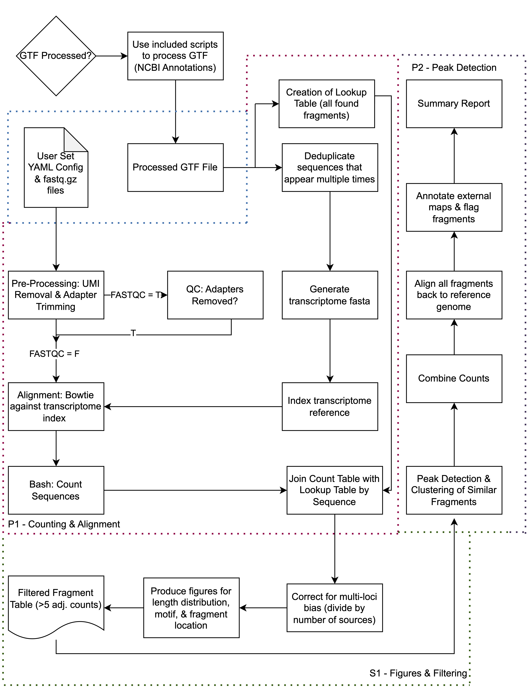

sRNAfrag
Graphical Overview
Introduction & Key Features
sRNAfrag is a modular tool tailored for quantifying and analyzing small RNA fragmentation across multiple biotypes. Its core function creates a relational database from sequencing data, allowing for in-depth exploration of complex biological events. Established miRNA loci were identified using this tool based solely on sequencing data, with the 5' seed sequence rediscovered.
Applications & Limitations
The tool identified 1411 snoRNA fragment conservation events between 2 out of 4 eukaryotic species. Its peak calling algorithm, however, doesn't account for secondary structures or motifs, potentially hindering the distinction between degradation products and true fragments.
Availability & Flexibility
sRNAfrag is available on GitHub with detailed documentation and tutorials. Built on Python, it uses the Fire package for command line function access, making it flexible and expandable for researchers.